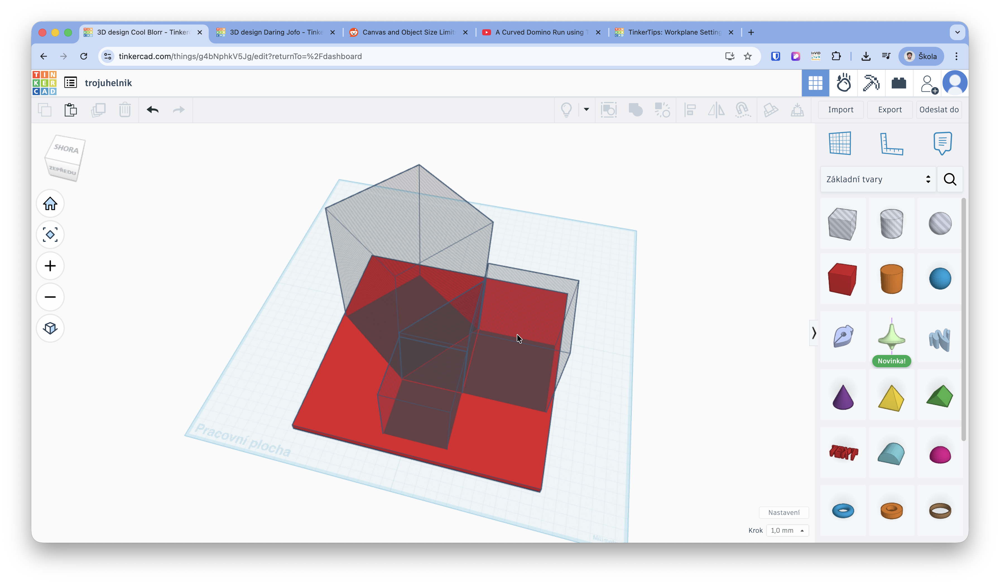

Technický list a 3D Modelování


Technická reflexe z praxe
Tento model byl reálně testován ve výuce. Při jeho modelování a tisku doporučujeme držet se následujících postupů, které se nám v praxi osvědčily.
1. Snadná manipulace pro žáky
Aby se z pomůcky stal funkční "puzzle" hlavolam, je klíčové zajistit, aby šly dílky jednoduše vyndávat. Čtverečky jsou modelovány jako vyšší než samotný rám lůžka. Díky tomu přirozeně vyčnívají nad povrch podložky a žáci je mohou snadno uchopit prsty ze stran, aniž by museli celou pomůcku složitě otáčet a vysypávat.
2. Řešení tolerance v Tinkercadu
Při vkládání objektů do sebe (čtvereček do díry) je nutné počítat s rozpínáním plastu. Prvek typu "Díra" tvořící lůžko je vhodné vždy o zhruba 0.3 až 0.4 mm větší na všech stranách oproti vkládanému čtverečku.
3. Úskalí: Prostředí Tinkercadu a velikost
Při tvorbě takto plošně rozsáhlého modelu brzy narazíte na omezení výchozí velikosti pracovní plochy (Workplane). Doporučujeme hned na začátku modelování kliknout na nastavení mřížky ("Upravit mřížku" vpravo dole) a rozměry plochy si zvětšit (např. na 300x300 mm), aby se vám s jednotlivými díly na ploše pohodlně manipulovalo.
4. Přizpůsobení pro menší tiskárny
Pokud máte tiskárnu s menší tiskovou plochou, celý model jde ve Sliceru snadno upravit a proporcionálně zmenšit (škálovat). Je však nutné zachovat naprosto stejný poměr zmenšení pro podložku i vkládané kostičky zároveň, aby do sebe díly stále přesně zapadaly.